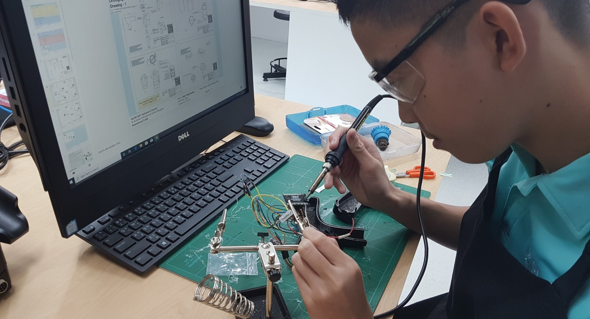
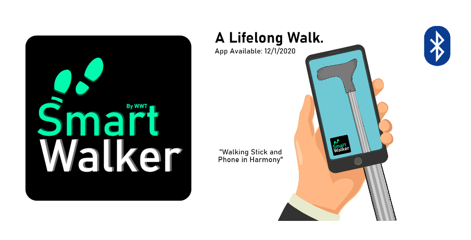

Intiating Projects
What I had in mind in this project was to tackle the current issue of lack of elderly support. Therefore, I decided to prototype a walking aid that can be used when the elderly are alone.
As the project manager for the prototyping of the SmartWalker, I designed the whole design of the SmartWalker, including all the mechanics, electronics, and software needed. The functions of the Smart Walker include:
- Walking Aid Stability and Cushion Mechanism.
- Customizable Height
- Compact size
- Fall Alert System
- Fall Alert Mobile Application
Throughout the process of building the SmartWalker, I learnt many technical skills, particularly in electronics and software. In electronics, I worked with components, such as the Bluetooth HC-05 module and the Arduino MICRO which I thoroughly enjoyed learning and study about. In terms of software, I learnt mostly the beginnings of mobile app creation where I started off with the MIT App Inventor which I connected with a Bluetooth system. The app can be viewed by clicking this link.
Overall, this issue still has yet to be solved. So I will continue to support the improvement of this issue through my ever-growing knowledge. In the future, I hope I can utilise my interest in robotics to further help with this 'elderly crisis'. I look forward to more projects like this in the future.
Below is the video of the event:
